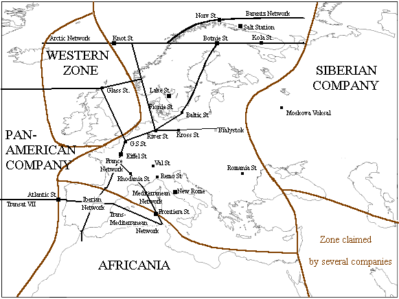

| plan du site |
La Compagnie TransEuropéenne en 2350
|
Histoire Organisation Réseaux et stations Autres informations Romans |
 |
|
Notes sur la carte La carte est cliquable Elle est une interprétation personnelle de ma lecture des Compagnie des Glaces. |
Histoire officielle : Pendant la Grande Panique, des gens s'organisèrent dans un dépôt ferroviaire suisse. Peu à peu ils relièrent l'ensemble de l'Europe. Il fondèrent la Compagnie Eurasienne, dont la Sibérienne se détacha. Elle devint alors la TransEuropéenne.
Histoire réelle : cette compagnie fut fondée vers 3740 EC par Sadon, un chasseur qui, intéressé par Rogger et sa passion des locomotives, commença à relier des communautés entre elles grâce à un dépôt ferroviaire qu'il trouva sur le site du Mans. Ce réseau fut nommé la Railways Union, et occupait la France le Benelux et le nord de l'Allemagne.
Elpharos, un associé de Sadon, le quitta et fonda l'Union Ferroviaire, qui occupa le sud de la France. Peu après, une autre compagnie, le Réseau Grégorien, se créa dans le sud de l'Allemagne sous la domination d'un groupe de religieux.
Vers 3940 EC, La Railways Union, qui commence à être noyautée par les Aiguilleurs fait la conquête du Réseau Grégorien, puis de l'Union Ferroviaire.
Vers 4053 EC, les Aiguilleurs obligent Sadon X à se retirer de la direction de la Compagnie. Elle devient la Compagnie TransEuropéenne, des actions de la compagnie sont distribuées aux plus méritants et la date de 125 après la Grande Panique est adoptée, soit 2175 EG.
Dans les cinquante ans qui suivirent, la Muslim Company fut à son tour conquise.
Histoire Contemporaine : de 2330 à 2348 EG, elle est en guerre contre la Compagnie Sibérienne, d'énormes moyens furent employés, causant de grandes pénuries.
C'est à cette époque que Floa Sadon augmenta son influence et disposa du pouvoir réel dans cette compagnie.
En 2360 EG, à cause de la pénurie (10/12 au lieu des 15/15), elle est le théâtre de violentes émeutes. Celle-ci débutèrent dans le nord, puis gagnèrent progressivement le sud. Le nord est pacifié, mais au sud les insurgés tiennent une dizaine de grandes stations. Pour y mettre fin, Floa Sadon fit entièrement détruire des stations (Rhodania Station).
Dans les années qui suivent un conflit l'oppose à l'Africania et la Sibérienne concernant les pétroles du Moyen Orient.
En 2371 EG, toujours à cause de la pénurie, la révolution éclate. Floa Sadon se réfugie dans une province restée calme, puis auprès de Kurts, mais elle est reprise, jugée et exécutée. La Compagnie est dirigée par un gouvernement révolutionnaire, auxquelles résistent quelques provinces comme celle de Romania Station. Mais le réchauffement général atteint la compagnie qui en avait été épargné jusqu'alors, et lorsque la Ceinture de Feu se forme, la Compagnie se réduit à la Scandinavie. Elle existe encore dans cette zone en 2390 EG, sous le nom de Colonies de l'Europe du Nord. On apprend plus tard qu'elle s'est diviséee en de nombreuses baronnies.
Elle est dirigée par in conseil d'administration composée des actionnaires majoritaires, mais en fait Floa Sadon, qui n'est officiellement que Déléguée aux Affaires Etrangères, possède tout le pouvoir, les autres actionnaires ne s'intéressant qu'aux bénéfices. En 2364, les actionnaires se décidèrent à régulariser la situation, et Floa Sadon fut élue PDG.
La Compagnie est divisée en provinces, mais seulement trois sont mentionnées :
Les réseaux connus sont :
Les autres stations sont :
Son logo est un globe terrestre entouré par deux rails formant la lettre grecque W.
Le niveau de vie est très faible. C'est la pénurie perpétuelle à cause de la rapacité des actionnaires.
Sur son histoire :
A partir de 2340 :
Sur la révolution qui secoua les dernières années :